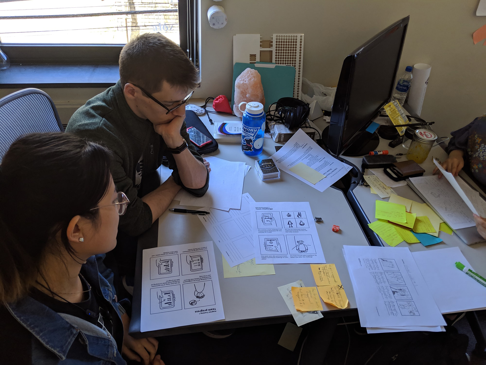

Research
Research Goals
1.
To develop an understanding of Post Traumatic Stress (PTS), Post Traumatic Growth (PTG), and the
science and philosophy that underlies Boulder
Crest’s approach.
2.
To immerse ourselves in the materials and language used by our client, and to also explore similar
programs and analogous domains.
3.
Most importantly, to communicate with Boulder Crest staff, alumni, and other veterans to learn
first-hand about the unique perspectives and stories of our users.
Research Methods
Secondary Research
- Background Research
- App Solutions
- Analogous Domains
- App Solutions
- Analogous Domains
- Researched PTS, veterans’ organizations and communities.
- Reviewed current healthcare technologies for PTS, especially ones for veterans.
- Analyzed of community-based analogous domains.

Boulder Crest Materials
- Struggle Well
- Student Guide
- myPATHH
- Student Guide
- myPATHH
- Immersed ourselves with everything Boulder Crest.
- From book club to read and discuss book Struggle Well written by BCR founder, reviewed BCR material for students, analyzed and evaluate current application.

Survey Responses
- Qualitative Analysis
- Affinity Diagramming
- Affinity Diagramming
- Synthesized survey response provided by client from former BCR student about the aftercare program to reveal insights and identify issues.

Interviews
- Semi-Structured
Affinity Diagramming
- Conducted interview with veterans from personal connections to understand the veteran community, and interviewed BCR coaches to learn about the organization.
- Synthesized interview notes to reveal insights and identify breakdowns.
Insights—First Half of the Semester
Diversity
Students come from a variety of experiences
Community
Students value community as a support system
Continuity, Structure
Students need the structure and support of the retreat to carry over to after care
Transferability
Students need transferable lessons
We saw an opportunity to improve engagement for students during the 18-month follow-up.
Research Through Design
As an exercise of design skills and to test our hypotheses generated in the previous
round of research, our team decided to build medium-fidelity prototypes. To maximize our efforts, we
split into two sub-teams. This “divide and conquer” strategy would ideally generate a
more diverse range of ideas than simply working as a whole team.